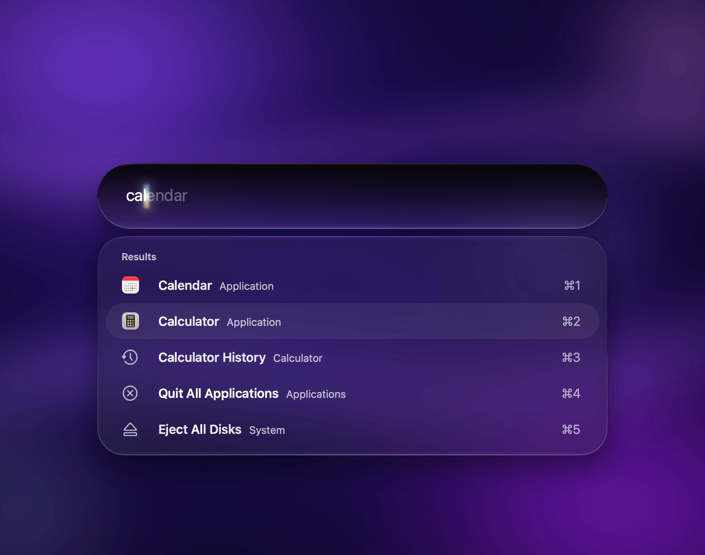
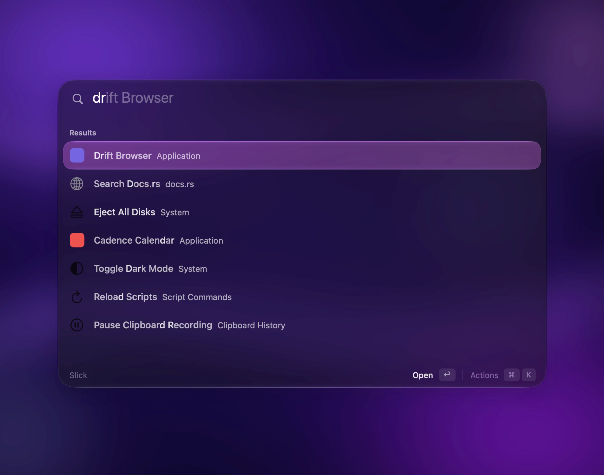
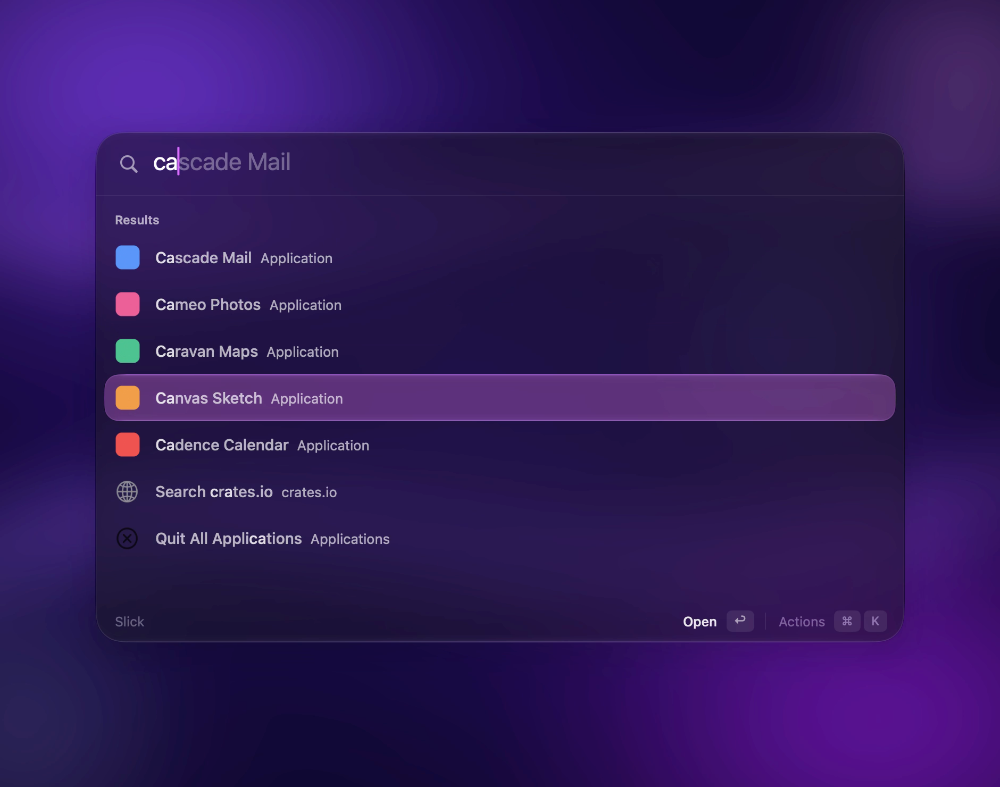
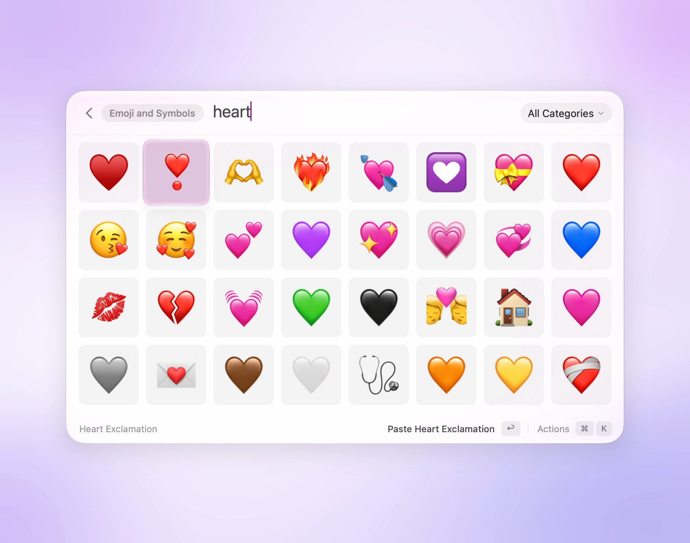
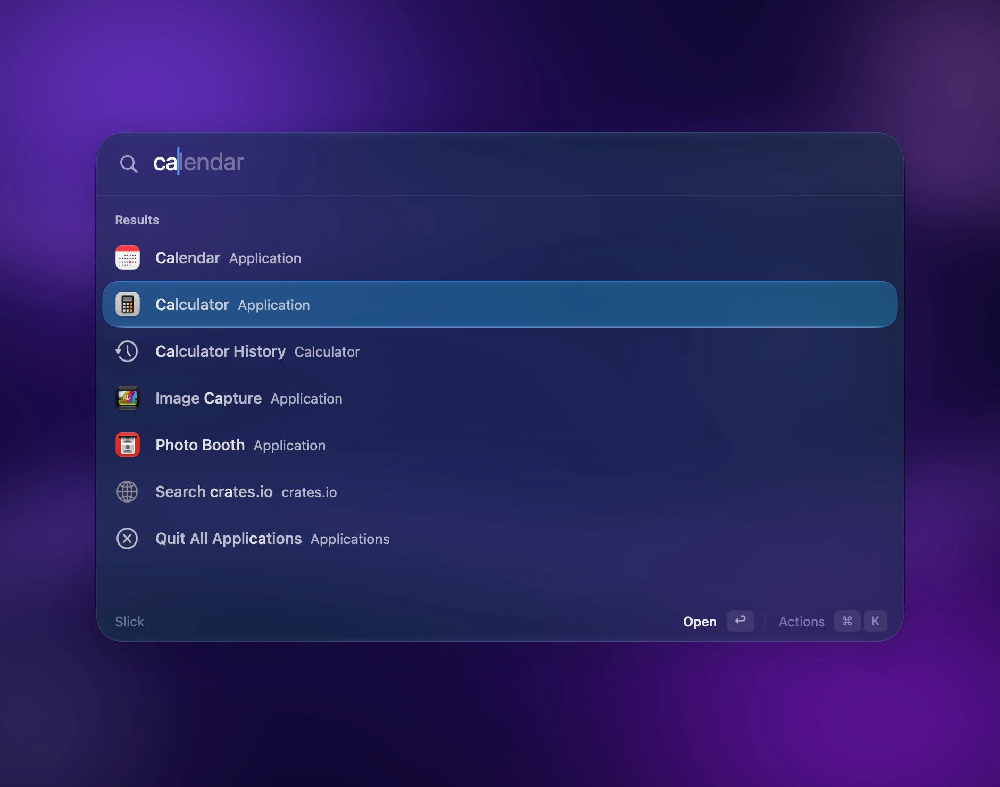
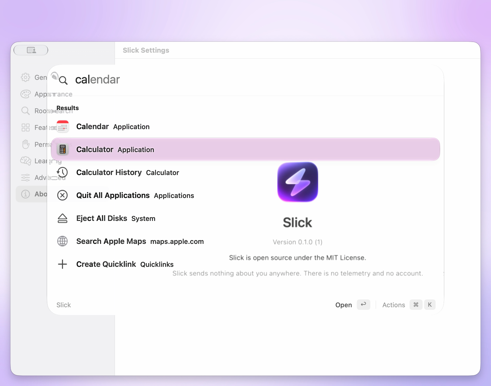
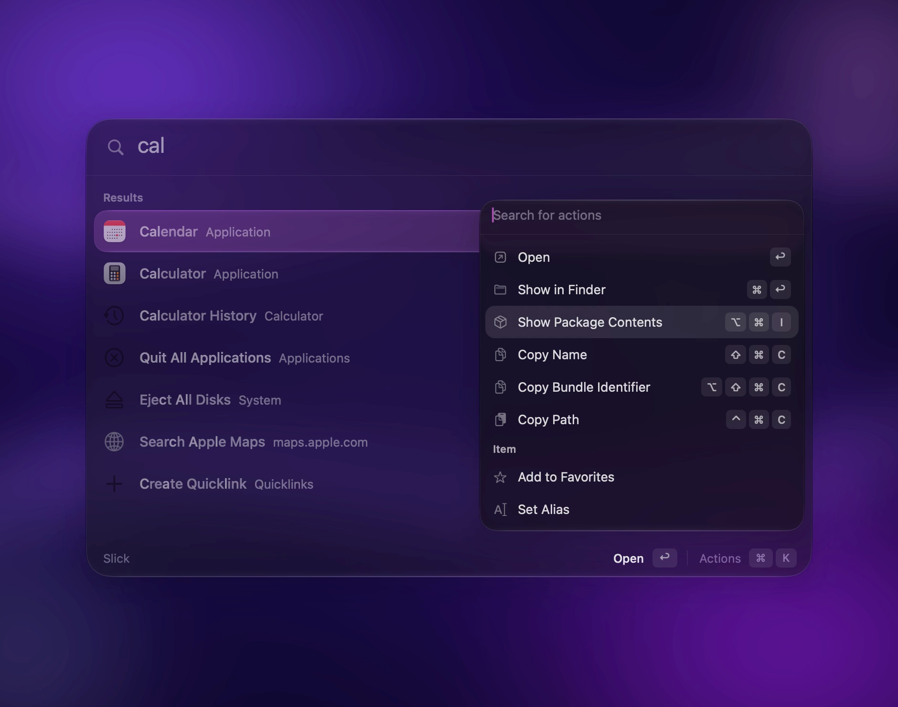

Spotlight
Spotlight is modeled on Spotlight in macOS 27.


A separate search field above the results.
Version 0.1.1 for macOS
Open apps, find files and run commands with a few keystrokes. A free, open-source launcher for macOS.
Search your clipboard, do a calculation or find an emoji without leaving the keyboard. Slick remembers your choices and puts them first.

Type “no” to find Notes. Press Return to open it.
Search
Results update as you type. Slick matches partial names, abbreviations and typos.

Type “calc” to find Calculator.
Built in




Calculate as you type. Press Return to copy the answer. Find something you copied and paste it again. Search emoji by name. Search files by name and see their details.
Learning
Choose the same result twice for a search and Slick moves it to the top.


Pick Font Book twice for “bo” and it moves above Books.
Themes
Seven built-in themes with adjustable glass, colors and text size.

Change themes in Settings under Appearance.
Spotlight is modeled on Spotlight in macOS 27.

A separate search field above the results.
Text can be harder to read over bright or busy windows with this theme.


Clear glass keeps the window behind Slick visible.
Keyboard
Command-Space opens Slick. You can choose a different shortcut during setup.
| Return | Run the selected action |
|---|---|
| Command-K | Open the action panel |
| Command-1 to 9 | Run a result by number |
| Tab | Complete the name or move to the next argument |
| Up Down | Move the selection |
| Escape | Clear search, go back or close Slick |
| Command-comma | Open settings |


Press Command-K to see actions. Type to filter them.
All features
A native macOS Liquid Glass panel.
Find results by partial name, abbreviation or typo.
Choose a result twice for the same search to move it to the top.
Get suggestions based on the time of day and the apps you use.
Open, quit or reveal apps and jump to System Settings panes.
Assign keyboard shortcuts and aliases, or pin items as favorites.
Choose from seven themes and adjust the glass, colors and text size.
Press Command-K for actions on the selected result.
Optional daily update checks. You choose when to install.
Search files by name and browse folders.
Calculate, convert units and currencies, and work with dates and time zones. Return copies the answer.
Find and paste text, links, images and files you copied.
Save text with placeholders and paste it when you need it.
Resize, center and move windows between displays.
Lock or sleep your Mac, adjust volume, eject disks and quit processes.
Open websites or search the web with a keyword.
Find emoji and symbols by name, then paste them.
Run scripts with arguments and view their output.
Run actions on text or files selected in another app.
Look up definitions and check spelling.
Check your calendar, join meetings and create events or reminders.
Find contacts to call, message or email.
Search and open bookmarks from Safari, Chrome and Firefox.
Find and run menu commands in the current app.
Ask questions using Apple’s on-device model or a provider you configure.
Type > to run a shell command and see its output.
Write, search and organize notes saved as Markdown files.
Pick colors from your screen, convert color values and check contrast.
Translate text using languages installed on your Mac.
Play, pause and skip tracks in Music and Spotify.
Download
Use Homebrew or download version 0.1.1. Requires Apple silicon and macOS 26 or later.
brew install --cask shawntz/tap/slick
Clipboard history is off by default. You can skip permissions during setup.
Slick has no account or telemetry. Web searches, currency conversions and online AI providers use the network when you use those features. If you enable update checks, Slick checks GitHub once a day.
Slick uses Command-Space by default and disables Spotlight's shortcut when you confirm it during setup. Choose another shortcut to keep Command-Space for Spotlight. You can change this later in Settings under General.
Run scripts from Slick with arguments and live output. You can also write a feature in Swift.